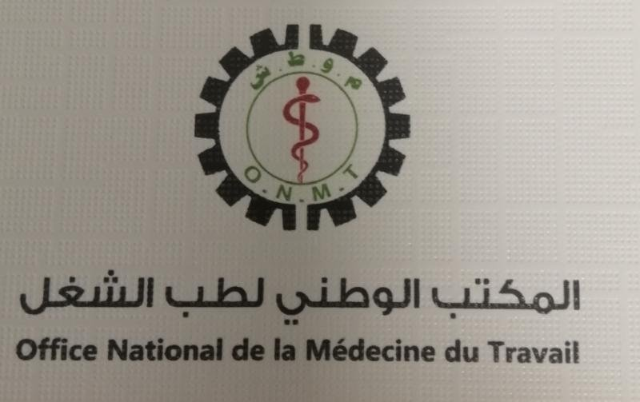

01 / 03
Fenêtres thématiques

Message de la Ministre & Catégories de Publications
Marieme MINT BOYDIEL HOUMEIDMinistre de la Fonction Publique et du Travail
Message de la MinistreLire
Accès direct aux services
Tous les services
Services en ligne
Documents officiels
Publications
Voir toutCode du Travail — Édition annotée 2023
Convention Collective Générale du Travail
Organigramme officiel du Ministère
Organismes rattachés
Établissements sous tutelle
Caisse Nationale de Sécurité SocialeVisiter le site officiel

Office National de la Médecine du TravailVisiter le site officiel
45 000+Fonctionnaires enregistrés
12Directions centrales
28Inspections régionales
1 200+Documents officiels